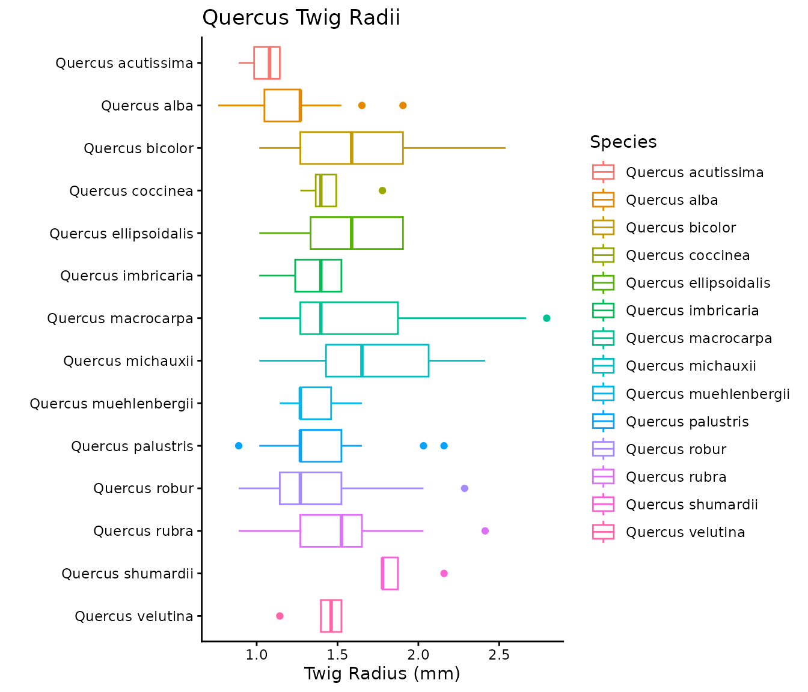

Background
Twigs are the smallest above ground woody component of a tree. Twigs are responsible for supporting the delicate tissues needed to grow leaves and protect the buds during the dormant season. Because twig measurements are the basis for the Real Twig method, and publicly available databases of twigs are limited, we present a database of twig measurements for a wide range of tree genera and species.
Installation
You can install the package directly from CRAN:
install.packages("rTwig")Or the latest development version from GitHub:
devtools::install_github("https://github.com/aidanmorales/rTwig")Twig Database
The twig database is built directly into rTwig and can be called as follows:
# If the rTwig library has been loaded
twigs
# If rTwig hasn't been loaded, but just the twigs are needed
rTwig::twigs
#> # A tibble: 96 × 7
#> scientific.name radius.mm n min max std cv
#> <chr> <dbl> <dbl> <dbl> <dbl> <dbl> <dbl>
#> 1 Abies concolor 1.43 21 0.89 1.9 0.28 0.19
#> 2 Abies spp. 1.43 21 0.89 1.9 0.28 0.19
#> 3 Acer platanoides 1.39 30 0.89 2.03 0.3 0.21
#> 4 Acer rubrum 1.18 30 0.89 1.52 0.16 0.14
#> 5 Acer saccharinum 1.41 14 0.89 1.9 0.27 0.2
#> 6 Acer saccharum 1.2 30 0.89 1.65 0.23 0.19
#> 7 Acer spp. 1.29 104 0.89 2.03 0.23 0.18
#> 8 Aesculus flava 2.67 8 2.29 2.79 0.2 0.08
#> 9 Aesculus spp. 2.67 8 2.29 2.79 0.2 0.08
#> 10 Betula nigra 0.85 30 0.51 1.52 0.23 0.27
#> # ℹ 86 more rowsThe database is broken into 7 different columns. scientific.name is the specific epithet. Genus spp. is the average of all of the species in the genus. radius.mm is the twig radius in millimeters. For each species, n is the number of unique twig samples taken, min is the minimum twig radius, max is the max twig radius, std is the standard deviation, and cv is the coefficient of variation.
Let’s see the breakdown of species.
unique(twigs$scientific.name)
#> [1] "Abies concolor" "Abies spp."
#> [3] "Acer platanoides" "Acer rubrum"
#> [5] "Acer saccharinum" "Acer saccharum"
#> [7] "Acer spp." "Aesculus flava"
#> [9] "Aesculus spp." "Betula nigra"
#> [11] "Betula spp." "Carya cordiformis"
#> [13] "Carya ovata" "Carya spp."
#> [15] "Cercis canadensis" "Cercis spp."
#> [17] "Cladrastis kentukea" "Cladrastis spp."
#> [19] "Cornus mas" "Cornus officinalis"
#> [21] "Cornus spp." "Crataegus spp."
#> [23] "Fagus grandifolia" "Fagus spp."
#> [25] "Fagus sylvatica" "Fraxinus americana"
#> [27] "Fraxinus pennsylvanica" "Fraxinus quadrangulata"
#> [29] "Fraxinus spp." "Gleditsia spp."
#> [31] "Gleditsia triacanthos" "Gymnocladus dioicus"
#> [33] "Gymnocladus spp." "Gymnopodium floribundum"
#> [35] "Gymnopodium spp." "Juglans cinerea"
#> [37] "Juglans nigra" "Juglans spp."
#> [39] "Laguncularia racemosa" "Laguncularia spp."
#> [41] "Larix laricina" "Larix spp."
#> [43] "Liriodendron spp." "Liriodendron tulipifera"
#> [45] "Magnolia acuminata" "Magnolia spp."
#> [47] "Malus spp." "Metasequoia glyptostroboides"
#> [49] "Metasequoia spp." "Nyssa spp."
#> [51] "Nyssa sylvatica" "Ostrya spp."
#> [53] "Ostrya virginiana" "Phellodendron amurense"
#> [55] "Phellodendron spp." "Picea abies"
#> [57] "Picea omorika" "Picea pungens"
#> [59] "Picea spp." "Pinus nigra"
#> [61] "Pinus spp." "Pinus strobus"
#> [63] "Platanus acerifolia" "Platanus occidentalis"
#> [65] "Platanus spp." "Populus deltoides"
#> [67] "Populus spp." "Prunus serotina"
#> [69] "Prunus spp." "Prunus virginiana"
#> [71] "Quercus acutissima" "Quercus alba"
#> [73] "Quercus bicolor" "Quercus coccinea"
#> [75] "Quercus ellipsoidalis" "Quercus imbricaria"
#> [77] "Quercus macrocarpa" "Quercus michauxii"
#> [79] "Quercus muehlenbergii" "Quercus palustris"
#> [81] "Quercus robur" "Quercus rubra"
#> [83] "Quercus spp." "Quercus velutina"
#> [85] "Rhizophora mangle" "Rhizophora spp."
#> [87] "Thuja occidentalis" "Thuja spp."
#> [89] "Tilia americana" "Tilia spp."
#> [91] "Tilia tomentosa" "Tsuga canadensis"
#> [93] "Tsuga spp." "Ulmus americana"
#> [95] "Ulmus rubra" "Ulmus spp."Visualization
Let’s visualize some of the twig data!
# Lets look at a subset of oak species
twigs %>%
filter(grepl("Quercus", scientific.name)) %>%
ggplot(aes(x = scientific.name, y = radius.mm, color = scientific.name)) +
geom_point(aes(size = n)) +
geom_errorbar(aes(ymax = max, ymin = min)) +
coord_flip() +
labs(
title = "Quercus Twig Radii",
x = "",
y = "Twig Radius (mm)",
color = "Species",
size = "Sample Size"
) +
scale_x_discrete(limits = rev) +
theme_classic()